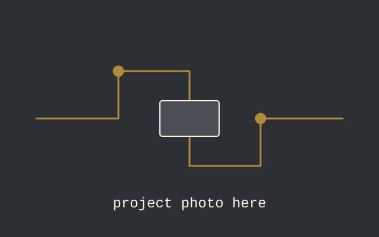

Project write-up
Circularly Polarized Antennas
[Two-sentence summary: the antennas you built, the question you tested (how the link holds up under rotation), and the headline finding.]
- Role
- [Solo / team of N, your part]
- Timeline
- [Month Year – Month Year]
- Frequency
- [Center frequency / band]
- Tools
- [Simulator, VNA, fab method]
Overview
[The motivation: applications where the two ends of a link can rotate relative to each other, and the goal of the project.]
Background
[Brief primer: linear vs. circular polarization, why a linearly polarized link fades as one antenna rotates (polarization mismatch), and how circular polarization avoids that. Define axial ratio and the metrics you used.]
Design and simulation
[Antenna type, how circular polarization is produced (e.g. feed arrangement or geometry), substrate or materials, key dimensions and how you arrived at them.]

Fabrication
[How the antennas were macrofabricated: materials, process steps, tolerances, and any issues that affected the finished parts.]
Measurement setup
[Instruments (e.g. VNA, signal generator, spectrum analyzer), test range, antenna separation, and how rotation angle was set and measured. Include a linearly polarized reference link if you compared against one.]
Results
Impedance match
[Measured vs. simulated S11, bandwidth, and any frequency shift.]
Rotational robustness
[How received power changed with rotation for each antenna pair.]
| Rotation | CP link (dBm) | Linear reference (dBm) |
|---|---|---|
| 0° | [ ] | [ ] |
| 45° | [ ] | [ ] |
| 90° | [ ] | [ ] |
| 135° | [ ] | [ ] |
| 180° | [ ] | [ ] |
Discussion
[Interpret the results: how close the antennas came to ideal circular polarization, sources of error (fabrication tolerance, multipath, cable movement), and how they compare to simulation.]
Conclusion
[The takeaway in two or three sentences, and what you'd do next.]